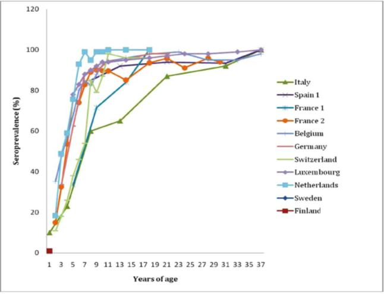
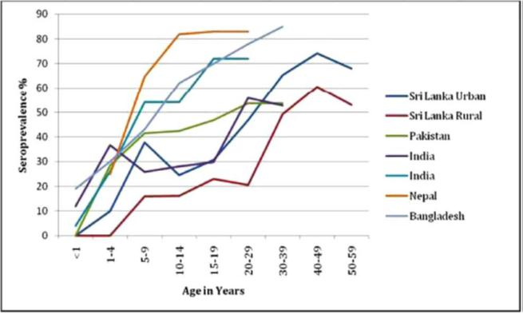
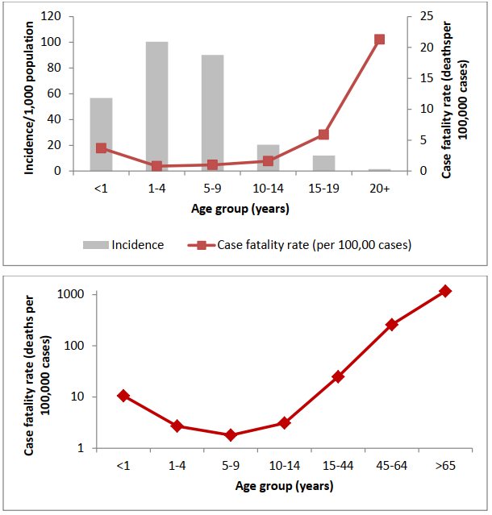

DỊCH TỄ HỌC • TRUYỀN NHIỄM & VI SINH • ICD-10: B01, B02
Dịch Tễ Học Bệnh Thủy Đậu (Varicella / VZV Epidemiology)
Chuyên khảo dịch tễ học toàn diện: Động học lây truyền Varicella-Zoster Virus (VZV), sự tương phản sâu sắc giữa vùng ôn đới và nhiệt đới, tỷ lệ tử vong hình chữ U, tác động của kỷ nguyên vắc-xin 1-liều/2-liều và rủi ro dịch chuyển tuổi khi độ bao phủ thấp theo chuẩn WHO & ECDC.
Tấn Công Thứ Phát (Hộ Gia Đình)
85%
Tỷ lệ lây nhiễm ở người nhạy cảm tiếp xúc cùng nhà (61% – 100%)
Nguy Cơ Tử Vong Người Lớn
23 – 29 Lần
Tỷ lệ CFR ở người trưởng thành so với trẻ nhỏ chưa tiêm vắc-xin
Hiệu Quả Bảo Vệ 2 Liều
92% – 95%
Ngăn ngừa triệt để các đợt bùng phát thủy đậu đột phá trường học
Ngưỡng Bao Phủ An Toàn WHO
≥ 80%
Mức bao phủ bắt buộc để tránh nghịch lý dịch chuyển tuổi mắc bệnh
1. Tam Giác Dịch Tễ Học Thủy Đậu (Varicella Triad)
Thủy đậu (varicella) là bệnh truyền nhiễm cấp tính lây truyền cực kỳ cao qua đường hô hấp và tiếp xúc trực tiếp do Varicella-Zoster Virus (VZV / Human Alphaherpesvirus 3) gây ra.
Con người là vật chủ tự nhiên duy nhất của vi rút này.
SƠ ĐỒ TAM GIÁC DỊCH TỄ HỌC BỆNH THỦY ĐẬU (VARICELLA TRIAD)
VZV Transmission & Latency Triad
2. Sự Khác Biệt Dịch Tễ Học Giữa Vùng Ôn Đới và Nhiệt Đới
Dịch tễ học của thủy đậu thể hiện sự phân hóa rõ nét giữa hai vùng khí hậu trên thế giới:
Đặc Tính Dịch Tễ
Vùng Khí Hậu Ôn Đới (Châu Âu, Bắc Mỹ)
Vùng Khí Hậu Nhiệt Đới (Nam Á, ĐNÁ, Châu Phi)
Lứa tuổi mắc bệnh chủ yếu
Trẻ em lứa tuổi ấu thơ (1–4 tuổi và 5–9 tuổi).
Thanh thiếu niên & Người lớn (20–29 tuổi và ≥30 tuổi).
Tỷ lệ có kháng thể (<15 tuổi)
Rất cao: >90% trẻ đã có kháng thể trước tuổi vị thành niên.
Rất thấp: Chỉ đạt 10%–40% ở lứa tuổi thanh thiếu niên.
Tỷ lệ người lớn còn nhạy cảm
Rất thấp (< 5%).
Rất cao: 20% – 50% người trưởng thành chưa có miễn dịch.
Tính chất mùa vụ
Mùa đông và mùa xuân; chu kỳ bùng phát 2–5 năm/lần.
Lưu hành quanh năm, ít có đỉnh dịch mùa rõ rệt như ôn đới.
Gánh nặng bệnh cảnh nặng
Thấp (do đại đa số mắc ở trẻ nhỏ có triệu chứng nhẹ).
Rất nặng nề (do người lớn mắc bệnh có tỷ lệ viêm phổi và tử vong cao).

Hình 1: Tỷ lệ phần trăm huyết thanh dương tính (Seroprevalence %) theo độ tuổi (1–37 tuổi) tại các quốc gia ôn đới Châu Âu. Đường cong dốc đứng đạt tiệm cận 90%–100% ngay từ 5–10 tuổi. (Nguồn: SAGE WHO, 2014)

Hình 2: Seroprevalence % theo các nhóm tuổi tại tiểu lục địa Ấn Độ (Sri Lanka, Ấn Độ, Pakistan, Nepal, Bangladesh). Tích lũy kháng thể chậm, để lại tỷ lệ người lớn nhạy cảm rất lớn. (Nguồn: SAGE WHO, 2014)
3. Sự Nhạy Cảm Trong Các Nhóm Đối Tượng Đặc Thù
Khoảng trống miễn dịch ở người lớn tại vùng nhiệt đới tạo nên nguy cơ bùng phát dịch đặc biệt nguy hiểm trong các môi trường nhạy cảm:
1. Nhân Viên Y Tế (Healthcare Workers - HCW)
Tại các nước ôn đới: Tỷ lệ bảo vệ rất cao (87.8% – 99.6%).
Tại các nước nhiệt đới: Tỷ lệ nhạy cảm (seronegative) lên tới 11% – 16% tại Malaysia, Saudi Arabia và 51% ở sinh viên y khoa năm thứ nhất tại Sri Lanka. Điều này làm tăng nguy cơ lây nhiễm chéo trong bệnh viện (nosocomial transmission) sang bệnh nhân nặng và suy giảm miễn dịch.
2. Phụ Nữ Mang Thai & Nguy Cơ Chu Phẫu
Tại ôn đới: Tỷ lệ thai phụ nhạy cảm thường < 5% (trừ một số vùng Nam Âu như Ý đạt 10.6%, Tây Ban Nha 12%).
Tại nhiệt đới: Có tới 56% phụ nữ trong độ tuổi sinh đẻ tại Sri Lanka thiếu kháng thể bảo vệ.
Hội chứng thủy đậu bẩm sinh (Congenital Varicella Syndrome - CVS): Xảy ra khi mẹ mắc bệnh trong 20 tuần đầu thai kỳ (tỷ lệ 1% – 2%), gây teo chi, sẹo da dạng dải, dị tật mắt và bất thường thần kinh trung ương.
Thủy đậu chu sinh (Perinatal Varicella): Mẹ phát ban từ 5 ngày trước đến 2 ngày sau sinh, trẻ sơ sinh có nguy cơ tử vong lên tới 30% nếu không được tiêm huyết thanh miễn dịch VZIG kịp thời.
4. Chu Kỳ Nhiễm Trùng, Động Học Ủ Bệnh & Tiềm Tàng Tái Hoạt Zona
VZV có khả năng gây nhiễm trùng tiên phát (Thủy đậu) và tiềm tàng suốt đời trong hệ thần kinh trước khi tái hoạt gây bệnh Zona:
SƠ ĐỒ ĐỘNG HỌC LÂY TRUYỀN, Ủ BỆNH VÀ TIỀM TÀNG TÁI HOẠT VZV
Varicella Pathogenesis & Zoster Latency Loop
5. Gánh Nặng Bệnh Tật Nặng & Tỷ Lệ Tử Vong (Đường Cong Hình Chữ U)
Ước tính hàng năm trên toàn cầu ghi nhận khoảng 4,2 triệu ca biến chứng nặng cần nhập viện và khoảng 4.200 đến 7.000 ca tử vong do thủy đậu.
Quy Luật Tử Vong Hình Chữ U (U-Shaped Mortality Curve):
Tỷ lệ tử vong trên số ca mắc (Case Fatality Ratio - CFR) thấp nhất ở trẻ em 1–9 tuổi (chỉ khoảng 1 ca/100.000 ca mắc).
Tuy nhiên, tỷ lệ này tăng vọt dốc đứng ở hai cực của độ tuổi:
• Trẻ sơ sinh < 1 tuổi: Nguy cơ tử vong cao gấp 4 lần so với trẻ lớn.
• Người trưởng thành (≥ 20 tuổi): Nguy cơ tử vong cao gấp 23 đến 29 lần (đặc biệt do biến chứng viêm phổi thủy đậu nguyên phát).
• Nghịch lý miễn dịch: Do thủy đậu quá phổ biến, 90% ca nhập viện và 70%–89% ca tử vong lại xảy ra ở những người hoàn toàn khỏe mạnh trước đó.

Hình 3: Tỷ lệ mắc và tỷ lệ tử vong theo nhóm tuổi. (Trên) Tại Mỹ thời kỳ tiền vắc-xin (1990–1994): Tỷ lệ mắc cao nhất ở trẻ 1–9 tuổi nhưng tỷ lệ tử vong tăng vọt ở người lớn ≥20 tuổi. (Dưới) Tại Brazil (2001–2003): Đường cong tử vong hình chữ U kinh điển đạt đỉnh ở trẻ <1 tuổi và người cao tuổi >65 tuổi. (Nguồn: SAGE WHO, 2014)
6. Dịch Tễ Học Trong Kỷ Nguyên Vắc-xin (1-Liều vs 2-Liều)
Chương trình tiêm chủng vắc-xin thủy đậu tại Hoa Kỳ (1995–2019) là bằng chứng kinh điển về tác động dịch tễ học của vắc-xin:
Vụ dịch giảm 80%, nhưng vẫn xảy ra dịch đột phá tại trường học.
Số vụ dịch giảm thêm 82%; 73% vụ dịch chỉ là cụm nhỏ <10 ca.
Tử vong & Nhập viện
Tử vong giảm 88% tổng thể (giảm 97% ở người <20t); nhập viện giảm 88%.
Duy trì tử vong ở mức cực thấp tiệm cận bằng 0 ở trẻ em.
7. Rủi Ro Dịch Chuyển Tuổi Mắc Bệnh Khi Độ Bao Phủ Vắc-xin Thấp
Khuyến Cáo Sống Còn Của WHO: Ngưỡng Bao Phủ An Toàn ≥ 80%
Tổ chức Y tế Thế giới (WHO) khuyến cáo các quốc gia chỉ nên đưa vắc-xin thủy đậu vào chương trình tiêm chủng mở rộng khi có khả năng đảm bảo độ bao phủ ổn định ≥ 80%.
Cơ chế nghịch lý dịch chuyển tuổi (Epidemiological Shift Paradox):
• Nếu tỷ lệ tiêm chủng chỉ đạt mức trung bình hoặc thấp (20% đến 80%), vắc-xin sẽ làm giảm lưu hành vi rút hoang dại trong cộng đồng nhưng không đủ tạo miễn dịch cộng đồng.
• Trẻ chưa tiêm phòng sẽ mất cơ hội phơi nhiễm tự nhiên khi còn nhỏ, lớn lên mà không có kháng thể.
• Hậu quả là tuổi mắc bệnh bị đẩy lùi sang lứa tuổi thanh thiếu niên và người trưởng thành.
• Vì tỷ lệ biến chứng nặng và tử vong ở người lớn cao gấp 23–29 lần so với trẻ nhỏ, điều này có nguy cơ làm tăng số ca tử vong và gánh nặng nhập viện chung của toàn quốc gia, dù tổng số ca mắc có thể giảm!